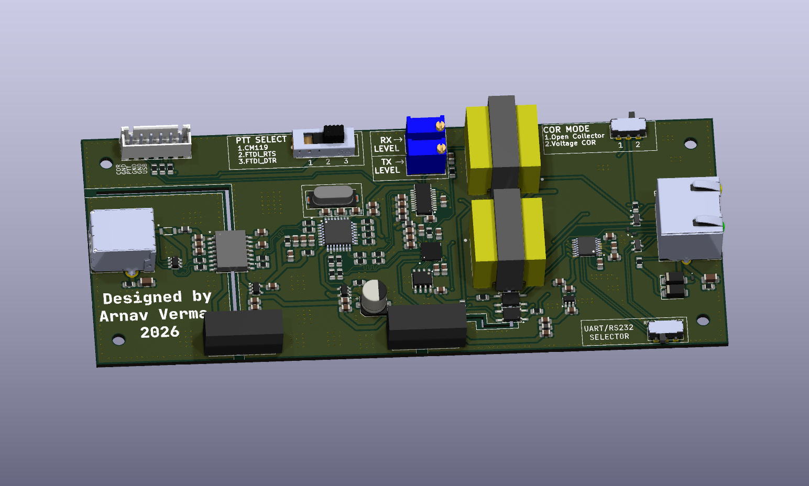

A fully-isolated USB-to-radio interface board designed for a commercial telecom client, built for drop-in compatibility with Asterisk chan_usbradio.

This was a freelance engagement for a commercial telecom client. Client and end-use details are confidential — the summary below covers the engineering scope only.
Designed a fully-isolated USB-to-radio interface board for a commercial telecom client, combining ADuM3160 USB isolation, a CM119B audio codec, and an FT231X UART bridge with dual-OS PTT/COR control — Linux HID GPIO on one side and Windows FTDI modem lines on the other — for drop-in compatibility with Asterisk chan_usbradio.